flowchart TD cs[Caso suspeito] --> us[Unidade de Saúde] us --> not[Notificação do caso suspeito] not --> sms[Secretaria Municipal de Saúde] sms --> ses[Secretaria Estadual de Saúde] ses --> ms[Ministério da Saúde] us --> aco[Acompanhamento do caso suspeito] aco --> exam[Exames clínicos e laboratoriais] exam --> diag[Diagnóstico do caso] diag --> conf(Caso confirmado) diag --> desc(Caso descartado) diag --> incon(Caso inconclusivo) conf --> atua[Atualização do caso suspeito] desc --> atua incon --> atua atua --> sms
7 SINAN – Sistema de Informação de Agravos de Notificação
7.1 Resumo
- Ano de criação: 1993
- Cobertura: Dimensões pública e privada do SUS
- Unidade: Ficha de notificação
- Divulgação de dados: mensal, com defasagem variada
7.2 Histórico e organização
O SINAN é um instrumento fundamental para a vigilância epidemiológica nacional, sendo responsável por coletar, transmitir e disseminar dados sobre uma lista de doenças e agravos de saúde, cuja notificação é compulsória em todo território nacional. A lista de doenças e agravos é atualizada permanentemente, conforme mudanças no cenário epidemiológico nacional, contando atualmente com 57 doenças e agravos (BRASIL, 2022a, 2022b).
Interessante observar que esta lista inclui, além de doenças infecto-contagiosas, a notificação compulsória de acidentes de trabalho, acidentes por animais peçonhentos, eventos adversos de vacinação, casos de óbito infantil e materno e casos de violência doméstica, sexual e tentativas de suicídio, permitindo ao sistema de saúde monitorar rapidamente diversos tipos de eventos de saúde de interesse.
A implantação do SINAN, foi iniciada em 1993 de forma gradual, e enfrentou problemas iniciais relacionados a indefinições do fluxo de informações, gestão múltipla do sistema e limitações do programa informatizado. A regulamentação do funcionamento do SINAN foi alcançada em 1998, possibilitando ganhos de melhoria em seus dados (CAETANO, 2009).
A unidade fundamental de operação do SINAN são as fichas de notificação, que são diferenciadas para cada doença e agravo de notificação compulsória. Todo caso suspeito é notificado no SINAN, sendo lançado progressivamente dados referentes ao paciente e suas condições de saúde, além de informações sobre a investigação do caso, atividades de diagnóstico, resultados de exames e o desfecho final do caso. As informações do SINAN subsidiam análises epidemiológicas, acompanhamento de endemias e epidemias e apoiam ações de planejamento, gestão e monitoramento da saúde.
7.3 Estrutura dos dados
O SINAN apresenta dados para todos os casos suspeitos notificados, independente do diagnóstico final. Desta forma, para se obter o total de casos confirmados para determinada doença ou agravo, deve-se filtrar os dados segundo o diagnóstico final.
Durante epidemias, observa-se no SINAN um aumento de casos notificados, que podem ou não serem confirmados posteriormente com o acompanhamento do caso.
A confirmação de casos, em geral, pode ser feita por exames laboratoriais de sangue e/ou outros amostras, testes rápidos (como Igm e IgC), ou confirmado pelo médico por critérios clínicos e epidemiológicos. Este último critério costuma ser mais adotado em situações de surtos e epidemias, onde há uma escassez de exames disponíveis. Em casos suspeitos de dengue, por exemplo, um caso pode ser confirmado à partir dos sintomas relatados na anamnese clínica desde que o paciente relate também um vínculo epidemiológico com um caso confirmado laboratorialmente.
Na impossibilidade de realização de confirmação laboratorial específica ou em casos com resultados laboratoriais inconclusivos, deve-se considerar a confirmação por vínculo epidemiológico com um caso confirmado laboratorialmente, após avaliação da distribuição espacial e espaço-temporal dos casos confirmados.(BRASIL, 2024a)
Nota
Dados de casos suspeitos reportados no SINAN podem apresentar diversas variáveis de datas e locais relativas a diferentes momentos do acompanhamento do caso. As datas mais comuns são: data de provavel infecção, data de notificação, data de digitação, data do(s) exames laboratoriai(s), data do diagnóstico final. Já as variáveis de localização mais comuns são: município/UF de provavel infecção, município/UF de residência e município/UF de notificação.
Para o acompanhamento epidemiológico, é mais usual a adoção da data de provavel infecção e município/UF de provavel infecção.
Casos onde o município/UF de provavel infeção é o mesmo que o de residência podem ser classificados como “autoctones”, ou seja, a doença foi contraída no mesmo município/UF de residência do paciente. Já casos onde a município/UF de provavel infeção é diferente do município/UF de residência podem ser classificados como “alotoctones”.
Dada a diversidade de doenças e agravos cobertos pelo SINAN, arquivos de diferentes estruturas de dados são disponíveis, apresentados a seguir.
7.3.1 Acidende de trabalho com material biológico
- Prefixo dos arquivos: ACBI
7.3.2 Acidente de trabalho
- Prefixo dos arquivos: ACGR
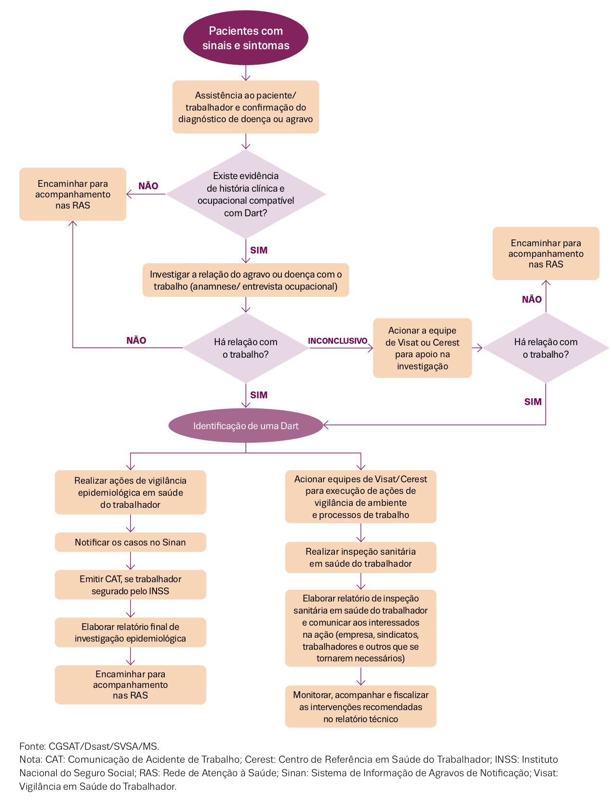
Fonte: BRASIL (2024b)
7.3.3 AIDS em adultos
- Prefixo dos arquivos: AIDA
- Códigos CID-10
- Infecção pelo HIV: Z21
- Aids: B20-B24
- Gestante HIV: Z21
- Criança exposta ao HIV: Z20.6
7.3.4 AIDS em crianças
- Prefixo dos arquivos: AIDC
- Código CID-10 (Criança exposta ao HIV): Z20.6
7.3.5 Acidentes por Animais Peçonhentos
- Prefixo dos arquivos: ANIM
- Códigos CID-10
- Acidente ofídico: X20 e T63.0
- Escorpionismo: X22 e T63.2
- Araneísmo: X21 e T63.3
- Lonomia e outras lagartas: X25 e T63.4
- Himenópteros (abelhas, vespas e formigas): X23 e T63.4
- Ficha de notificação
- Instrucional
- Roteiro de uso
- Dicionário de dados
7.3.6 Atendimento antirrabico
- Prefixo dos arquivos: ANTR
7.3.7 Botulismo
- Prefixo dos arquivos: BOTU
- CID-10: A05.1
- Ficha de notificação
- Instrucional
- Dicionário de dados
7.3.8 Câncer relacionado ao trabalho
- Prefixo dos arquivos: CANC
7.3.9 Doença de Chagas
- Prefixo dos arquivos: CHAG
- CID-10: B57
- Ficha de notificação
- Instrucional
- Dicionário de dados
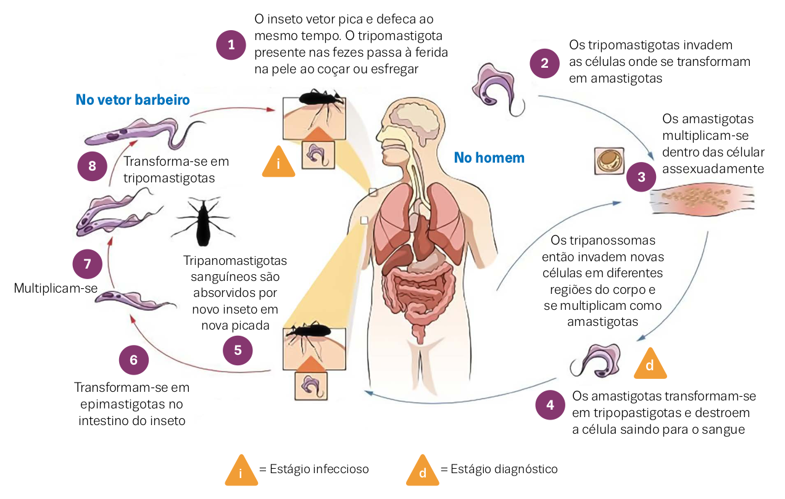
Fonte: BRASIL (2024a)
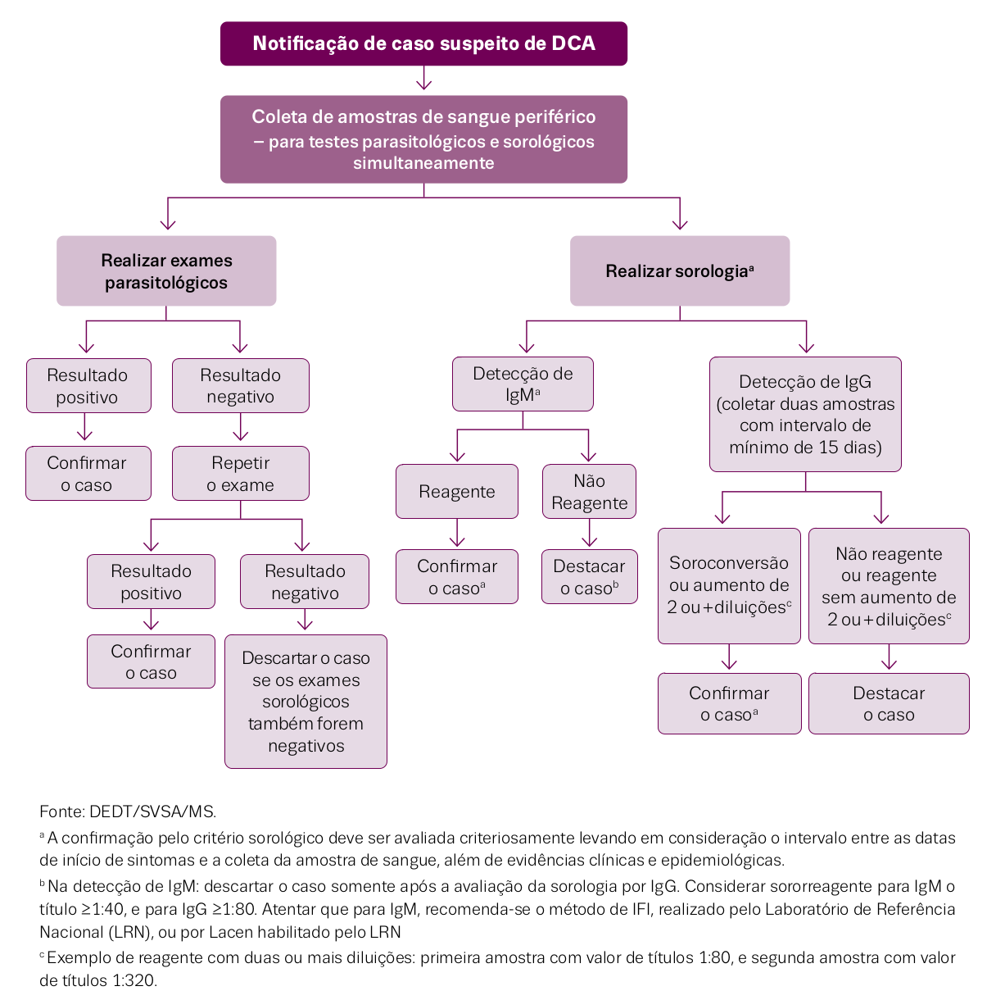
Fonte: BRASIL (2024a)
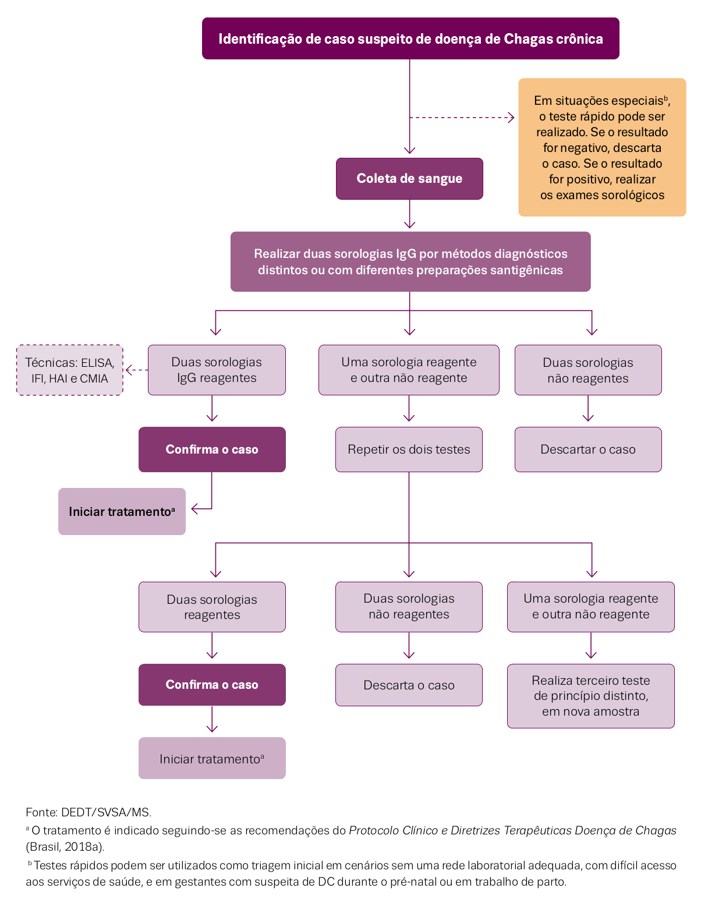
Fonte: BRASIL (2024a)
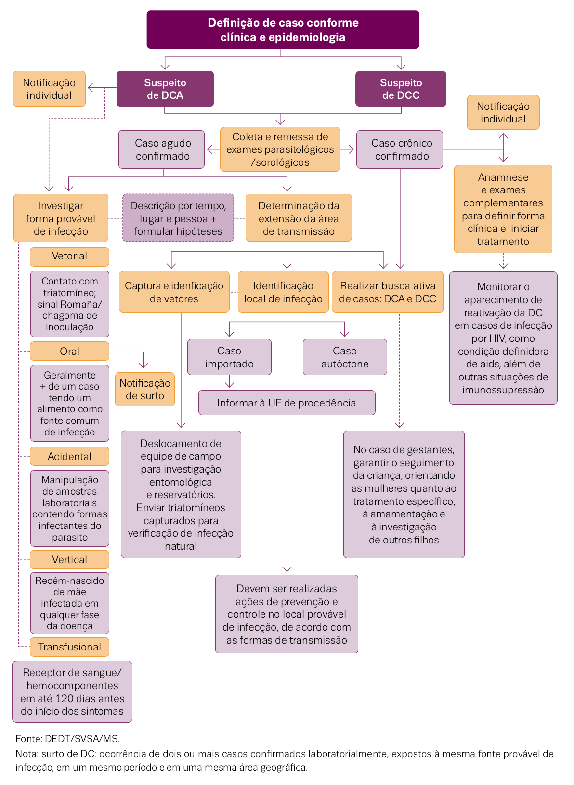
Fonte: BRASIL (2024a)
7.3.10 Febre de Chikungunya
- Prefixo dos arquivos: CHIK
7.3.11 Cólera
- Prefixo dos arquivos: COLE
- Código CID-10: A00
- Ficha de notificação
- Instrucional
- Dicionário de dados
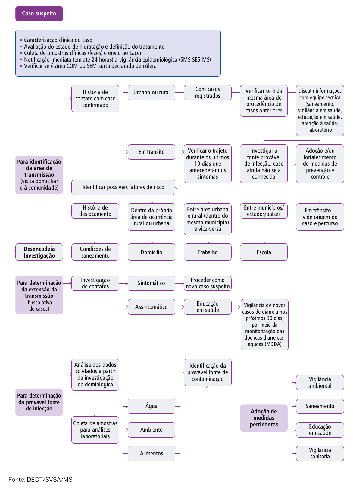
Fonte: BRASIL (2024b)
7.3.12 Coqueluche
- Prefixo dos arquivos: COQU
- CID-10: A37
- Ficha de notificação
- Instrucional
- Dicionário de dados
7.3.13 Dengue
- Prefixo dos arquivos: DENG
- Ficha de notificação
- Instrucional
- Dicionário de dados
- Nota informativa
7.3.14 Dermatoses ocupacionais
- Prefixo dos arquivos: DERM
- CID-10: L98.9
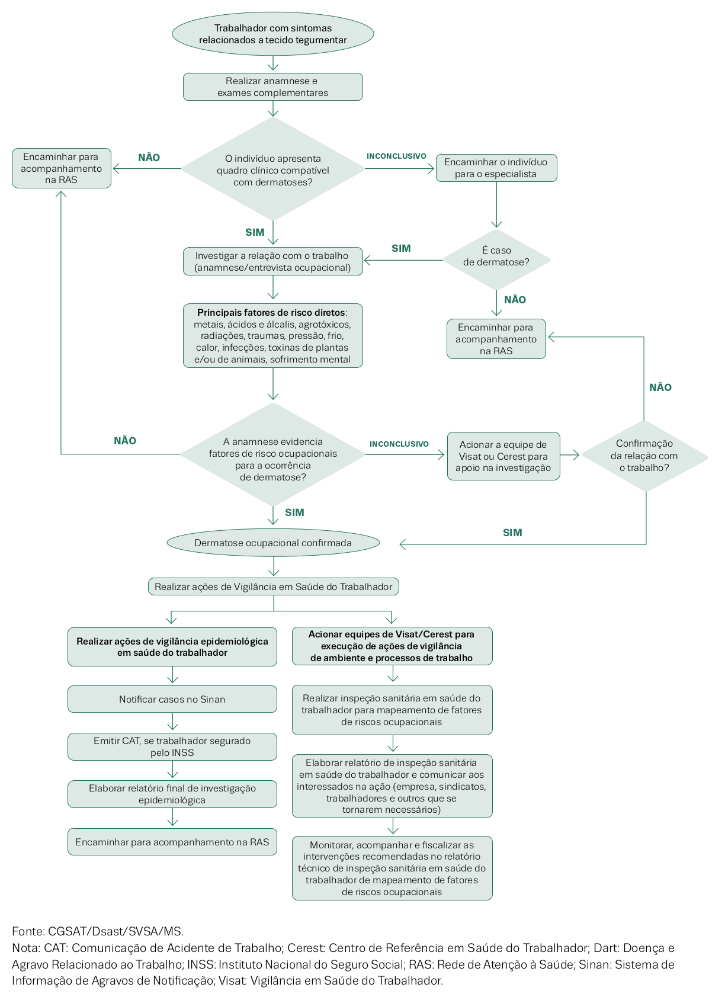
Fonte: BRASIL (2024c)
7.3.15 Esporotricose (Epizootia)
- Prefixo dos arquivos: ESPO
- CID-10: B42
7.3.16 HIV em adultos
- Prefixo dos arquivos: HIVA
7.3.17 HIV em crianças
- Prefixo dos arquivos: HIVC
7.3.18 HIV em crianças expostas
- Prefixo dos arquivos: HIVE
7.3.19 HIV em gestante
- Prefixo dos arquivos: HIVG
7.3.20 Influenza pandêmica
- Prefixo dos arquivos: INFL
7.3.21 Rotavírus
- Prefixo dos arquivos: ROTA
- CID-10: A08.0
- Dicionário de dados
7.3.22 Surto de doenças transmitidas por alimentos
- Prefixo dos arquivos: SDTA
7.3.23 Difteria
- Prefixo dos arquivos: DIFT
- CID-10: A36
- Ficha de notificação
- Instrucional
- Dicionário de dados
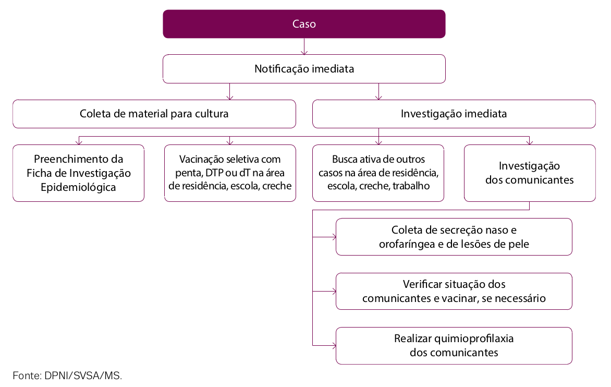
Fonte: BRASIL (2024b)
7.3.24 Esquistossomose mansoni
- Prefixo dos arquivos: ESQU
- CID-10: B65.1
- Ficha de notificação
- Instrucional
- Dicionário de dados
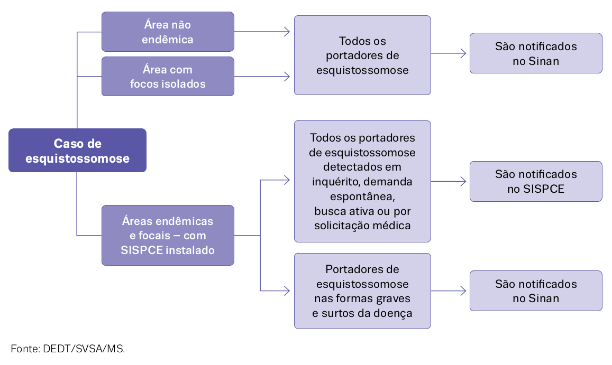
Fonte: BRASIL (2024a)
7.3.25 Doenças Exantemáticas
- Prefixo dos arquivos: EXAN
- Ficha de notificação
- Instrucional
- Dicionário de dados
7.3.26 Febre Amarela
- CID-10: A95
- Ficha de notificação
- Instrucional
- Dicionário de dados
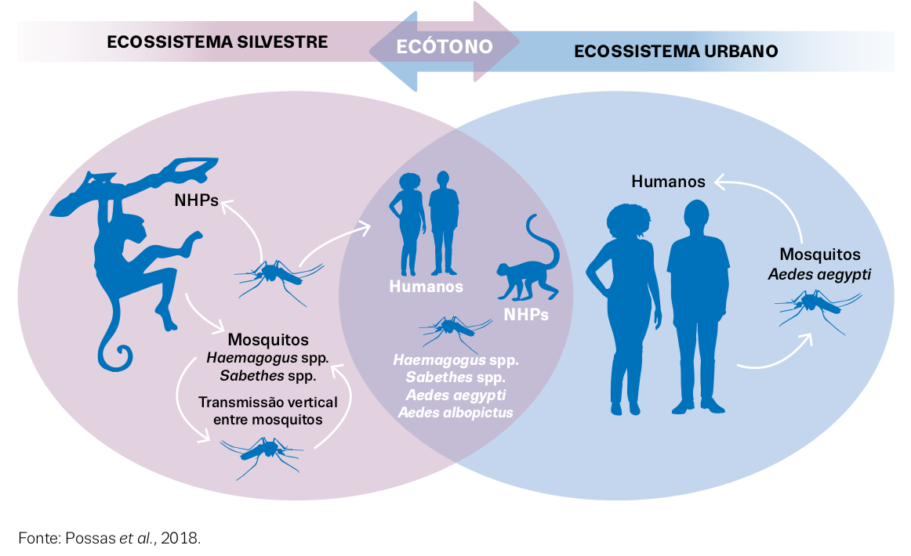
Fonte: BRASIL (2024a)
7.3.27 Febre Maculosa
- Prefixo dos arquivos: FMAC
- CID-10
- Rickettsioses transmitidas por carrapatos: A77
- Febre maculosa brasileira: A77.0
- Febre maculosa não especificada: A77.9
- Ficha de notificação
- Instrucional
- Dicionário de dados
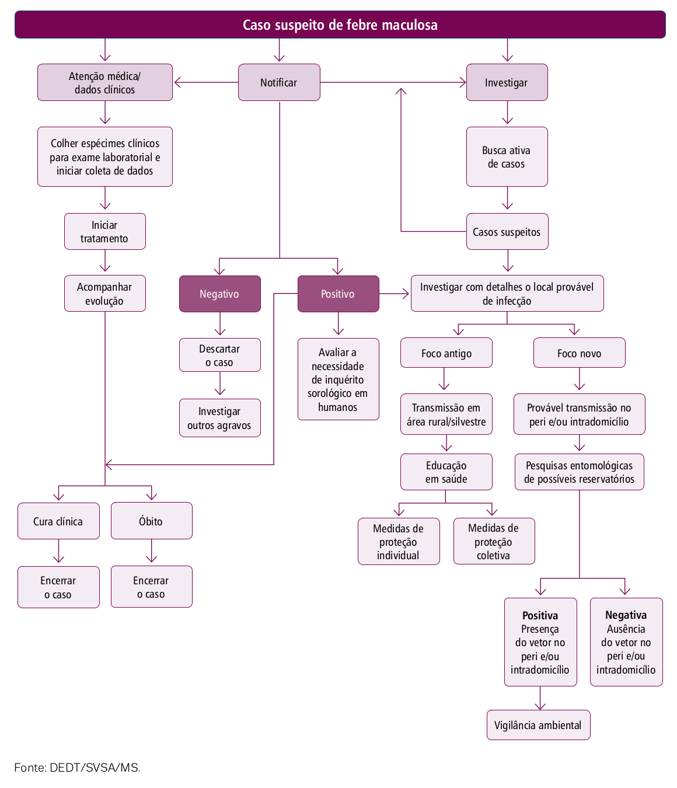
Fonte: BRASIL (2024c)
7.3.28 Febre Oropouche
7.3.29 Febre Tifóide
- Prefixo dos arquivos: FTIF
- CID-10: A01.0
- Ficha de notificação
- Instrucional
- Dicionário de dados
7.3.30 Hanseníase
- Prefixo dos arquivos: HANS
- CID-10: A30
- Ficha de notificação
- Instrucional
- Caderno de análise
- Dicionário de dados
7.3.31 Hantavirose
- Prefixo dos arquivos: HANT
- CID-10: B33.4
- Ficha de notificação
- Instrucional
- Dicionário de dados
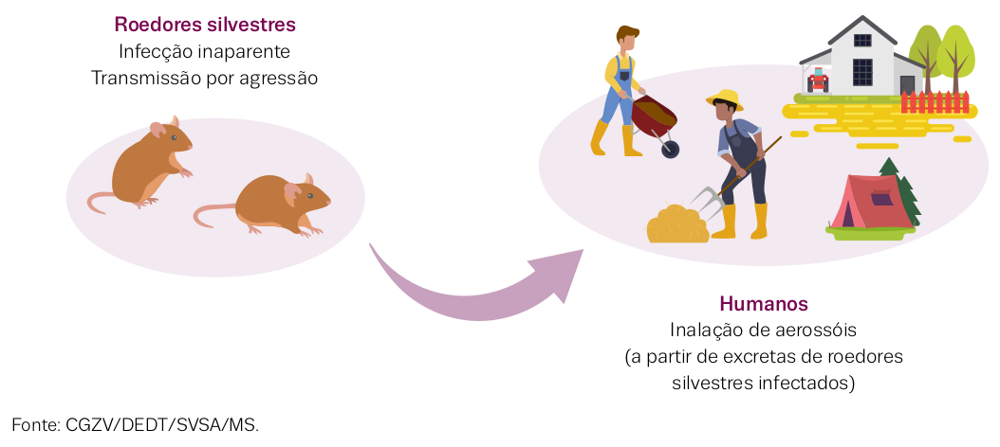
Fonte: BRASIL (2024c)
7.3.32 Hepatites Virais
- Prefixo dos arquivos: HEPA
- CID-10: B15 – B19.9
- Ficha de notificação
- Instrucional
- Dicionário de dados
7.3.33 Intoxicação Hexógena
- Prefixo dos arquivos: IEXO
- Ficha de notificação
- Instrucional
- Dicionário de dados
7.3.34 Leishimaniosse Tegumentar Americana
- Prefixo dos arquivos: LTAN
- CID-10: B55.1
- Ficha de notificação
- Instrucional
- Caderno de análises
- Dicionário de dados
7.3.35 Leishmaniose Visceral
- Prefixo dos arquivos: LEIV
- CID-10: B55.0
- Ficha de notificação
- Instrucional
- Caderno de análise
- Dicionário de dados
7.3.36 Leptospirose
- Prefixo dos arquivos: LEPT
- CID-10: A27
- Ficha de notificação
- Instrucional
- Dicionário de dados
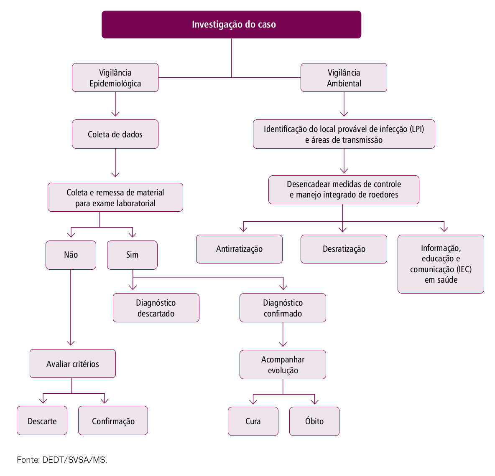
Fonte: BRASIL (2024c)
7.3.37 LER/DOT
- Prefixo dos arquivos: LERD
7.3.38 Malária
- Prefixo dos arquivos: MALA
- CID-10: B50 a B54 / P37.3 e P37.4
- Ficha de notificação
- Instrucional
- Dicionário de dados
7.3.39 Meningite
- Prefixo dos arquivos: MENI
- CID-10
- Meningite meningocócica: A39.0
- Meningococcemia aguda: A39.2
- Ficha de notificação
- Instrucional
- Caderno de análises
- Tutorial de análises epidemiológicas
- Dicionário de dados
7.3.40 Transtornos mentais relacionais ao trabalho
- Prefixo dos arquivos: MENT
7.3.41 Notificação de tracoma
- Prefixo dos arquivos: NTRA
- CID-10
- Tracoma: A71
- Sequelas de tracoma: B94.0
7.3.42 Inquérito de tracoma
- Prefixo dos arquivos: TRAC
7.3.43 Perda auditiva por ruído relacionado ao trabalho
- Prefixo dos arquivos: PAIR
7.3.44 Monkeypox
A notificação de Monkeypox (Mpox) está sendo realizada com o e-SUS SINAN, uma nova versão do SINAN.
7.3.45 Notificação Individual
7.3.46 Notificação Individual e-SUS SINAN
7.3.47 Peste
- Prefixo dos arquivos: PEST
- CID-10: A20
- Ficha de notificação
- Instrucional
- Dicionário de dados
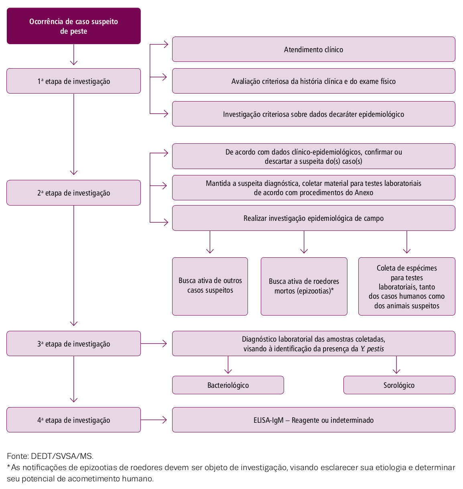
Fonte: BRASIL (2024c)
7.3.48 Poliomelite / Paralisia Flácida Aguda
- Prefixo dos arquivos: PFAN
- CID-10: A80
- Ficha de notificação
- Instrucional
- Dicionário de dados
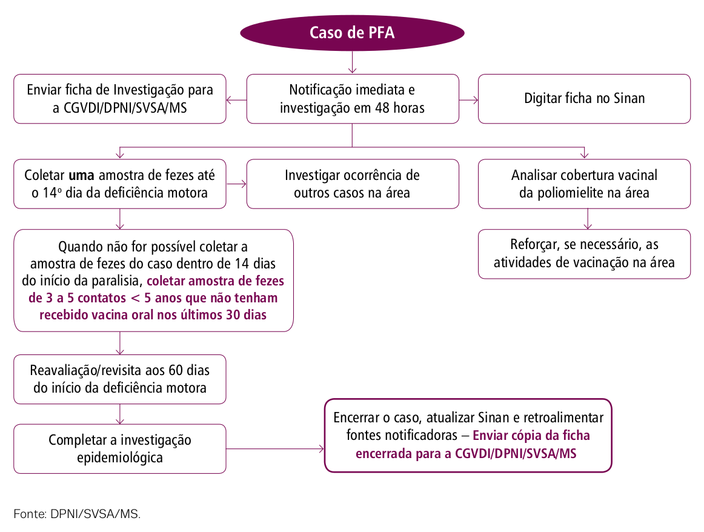
Fonte: BRASIL (2024b)
7.3.49 Pneumoconioses relacionadas ao trabalho
- Prefixo dos arquivos: PNEU
- CID-10: J64
7.3.50 Raiva Humana
- Prefixo dos arquivos: RAIV
- CID-10: A82
- Ficha de notificação
- Instrucional
- Dicionário de dados
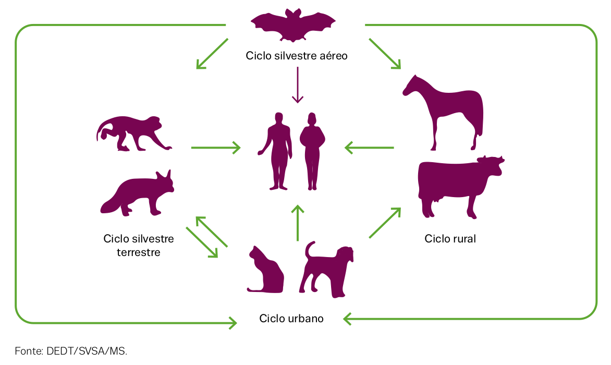
Fonte: BRASIL (2024c)
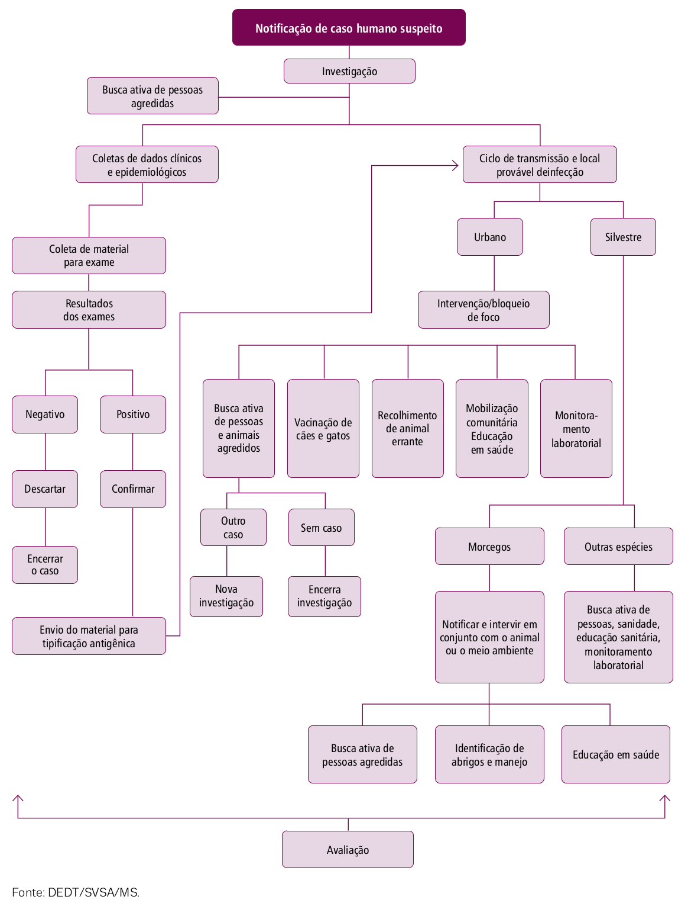
Fonte: BRASIL (2024c)
7.3.51 Sífilis adquirida
- Prefixo dos arquivos: SIFA
- CID-10: A53.9
7.3.52 Sífilis Congênita
- Prefixo dos arquivos: SIFC
- CID-10: A50
- Ficha de notificação
- Instrucional
- Nota informativa
- Dicionário de dados
7.3.53 Sífilis em Gestante
- Prefixo dos arquivos: SIFG
- CID-10: O98.1
- Ficha de notificação
- Instrucional
- [Nota informativa](assets/sinan/agravos/SIFIGEN_NOTA_INFORMATIVA.pdf
- Dicionário de dados
7.3.54 Síndrome da Rubéola Congênita
- Prefixo dos arquivos: SRC
- CID-10: P35.0
- Ficha de notificação
- Instrucional
- Dicionário de dados
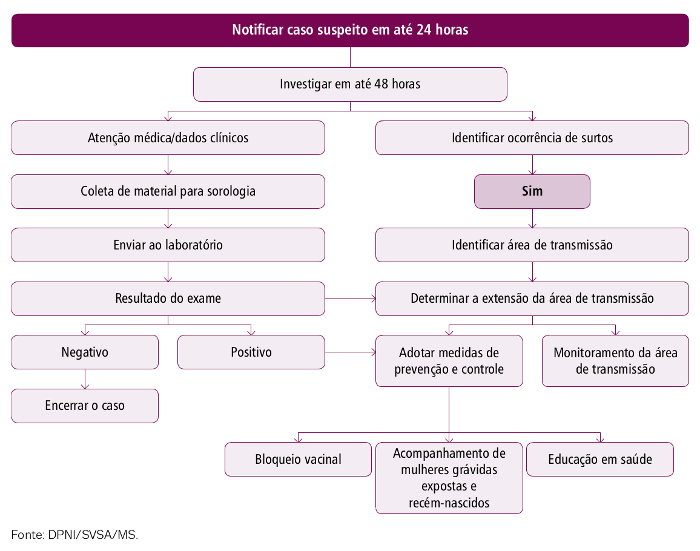
Fonte: BRASIL (2024b)
7.3.55 Tétano Acidental
- Prefixo dos arquivos: TETA
- CID-10: A35
- Ficha de notificação
- Instrucional
- Dicionário de dados
7.3.56 Tétano Neonatal
- Prefixo dos arquivos: TETN
- CID-10: A33
- Ficha de notificação
- Instrucional
- Dicionário de dados
7.3.57 Toxoplasmose congênita
- Prefixo dos arquivos: TOXC
- CID-10: P37.1
7.3.58 Toxoplasmose gestacional
- Prefixo dos arquivos: TOXG
- CID-10: O98.6
7.3.59 Tuberculose
- Prefixo dos arquivos: TUBE
- CID-10: A15 a A19; J65; K93.0; M49.0; M90.0; N74.0; N74.1; O98.0; P37.0
- Ficha de notificação
- Ficha de acompanhamento
- Instrucional
- Dicionário de dados
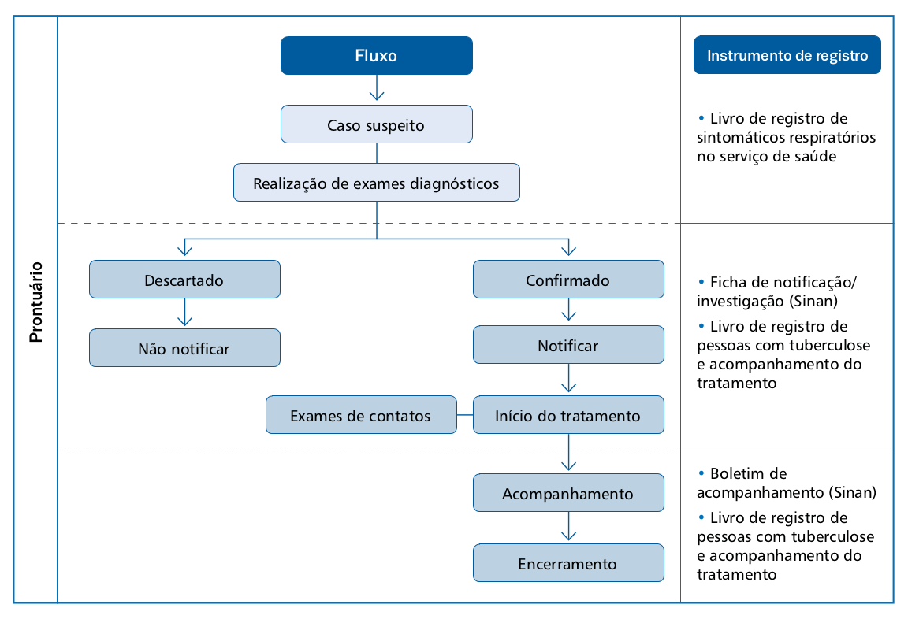
Fonte: BRASIL (2024a)
7.3.60 Varicela / Herpes-Zóster
- Prefixo dos arquivos: VARC
- CID-10: B01/B02
7.3.61 Violência doméstica, sexual e/ou outras violências
- Prefixo dos arquivos: VIOL
7.3.62 Violência Interpessoal/Autoprovocada
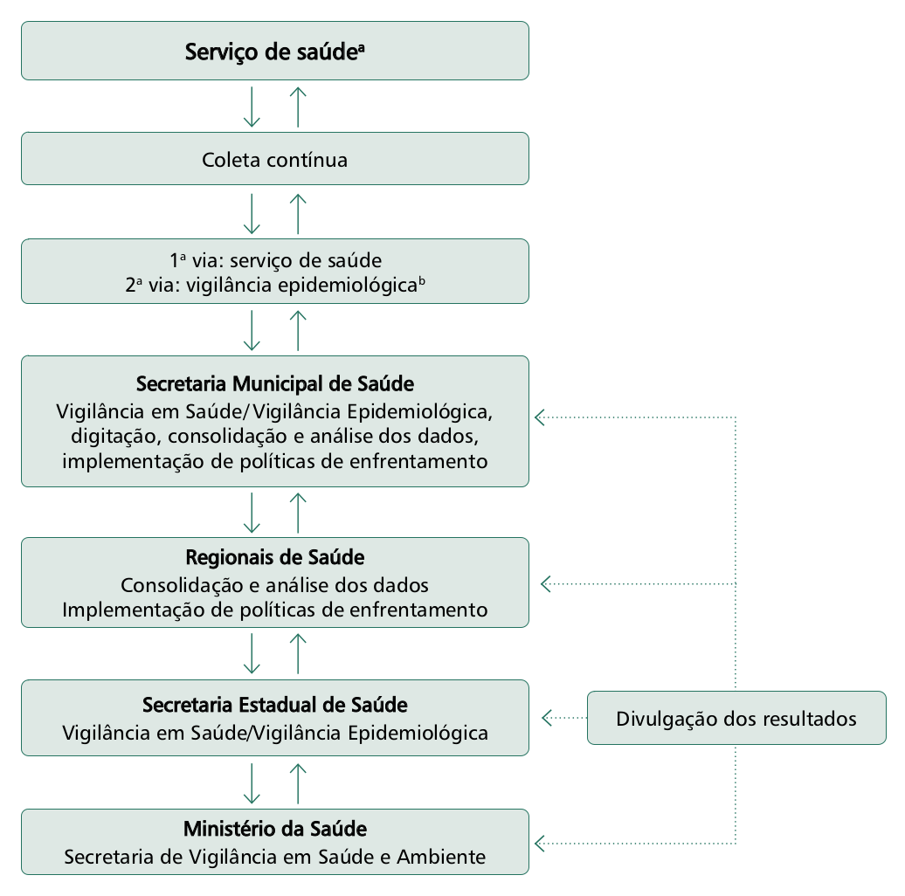
Fonte: BRASIL (2024c)
7.3.63 Zika vírus
- Prefixo dos arquivos: ZIKA
7.4 Acesso aos dados
7.4.1 TabNet
Os dados do SINAN podem ser acessados no sistema TabNet do DataSUS, na seção “Epidemiológicas e Morbidade”.
7.4.2 TabWin
Para uso no TabWin, você irá precisar baixar no servidor de FTP do DataSUS, os arquivos de dados no formato DBC e os arquivos auxiliares para tabulação.
7.4.3 R
Você pode usar o pacote {microdatasus}.
library(microdatasus)
sinan_raw <- fetch_datasus(
year_start = 2017,
year_end = 2017,
information_system = "SINAN-DENGUE"
)
sinan_p <- process_sinan_dengue(sinan_raw)
sinan_p# A tibble: 518,483 × 133
TP_NOT ID_AGRAVO DT_NOTIFIC SEM_NOT NU_ANO SG_UF_NOT ID_MUNICIP ID_REGIONA
<chr> <chr> <chr> <chr> <chr> <chr> <chr> <chr>
1 Individu… A90 2017-12-14 201750 2017 Acre 120020 1941
2 Individu… A90 2017-12-11 201750 2017 Acre 120020 1941
3 Individu… A90 2017-10-20 201742 2017 Acre 120020 1941
4 Individu… A90 2017-03-08 201710 2017 Acre 120020 1941
5 Individu… A90 2017-12-29 201752 2017 Acre 120020 1941
6 Individu… A90 2017-12-14 201750 2017 Acre 120020 1941
7 Individu… A90 2017-12-15 201750 2017 Acre 120020 1941
8 Individu… A90 2017-12-05 201749 2017 Acre 120020 1941
9 Individu… A90 2017-12-01 201748 2017 Acre 120020 1941
10 Individu… A90 2017-11-29 201748 2017 Acre 120020 1941
# ℹ 518,473 more rows
# ℹ 125 more variables: ID_UNIDADE <chr>, DT_SIN_PRI <chr>, SEM_PRI <chr>,
# DT_NASC <chr>, NU_IDADE_N <chr>, CS_SEXO <chr>, CS_GESTANT <chr>,
# CS_RACA <chr>, CS_ESCOL_N <chr>, SG_UF <chr>, ID_MN_RESI <chr>,
# ID_RG_RESI <chr>, ID_PAIS <chr>, DT_INVEST <chr>, ID_OCUPA_N <chr>,
# FEBRE <chr>, MIALGIA <chr>, CEFALEIA <chr>, EXANTEMA <chr>, VOMITO <chr>,
# NAUSEA <chr>, DOR_COSTAS <chr>, CONJUNTVIT <chr>, ARTRITE <chr>, …7.4.4 Python
Você pode usar a biblioteca PySUS.
7.4.5 InfoDengue
O projeto InfoDengue, mantido pela FGV EMAp e Fiocruz, apresenta estimativas da incidência da Dengue a partir de dados do SINAN, usando técnicas de nowcasting para reduzir os efeitos do atraso de notificação. O acesso aos dados é possível por uma API.